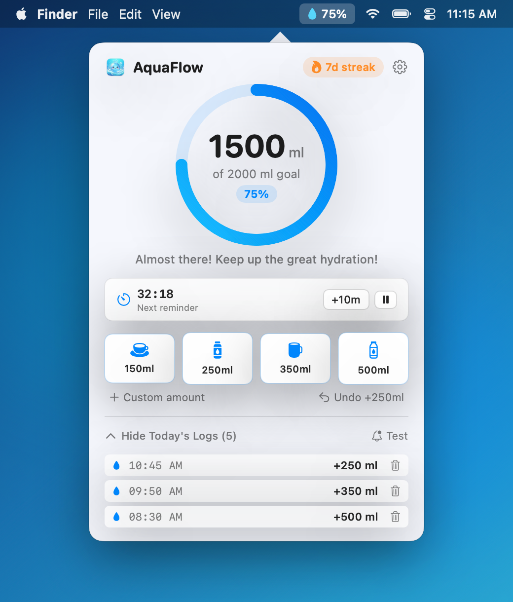
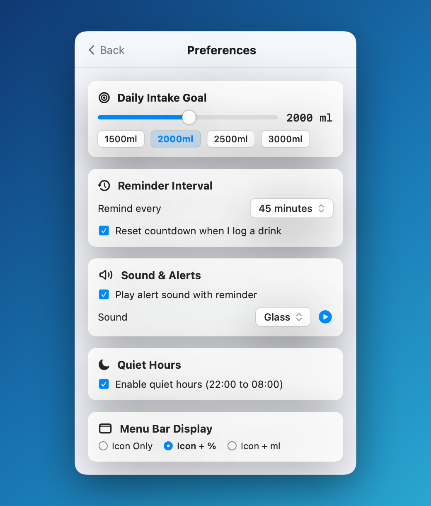

True LSUIElement Status Item
Runs strictly in your macOS status bar without occupying Dock space. Choose between 💧 Icon Only, 💧 65% Percentage, or 💧 1250ml Live Intake—automatically switching to ✓ when your daily goal is met.
AquaFlow lives quietly in your macOS status bar as an LSUIElement app—never cluttering your Dock or ⌘Tab switcher. Log drinks in one click, watch your daily progress ring fill up, and receive actionable macOS notifications with custom audio chimes and automatic quiet hours.
Interact with an authentic replica of AquaFlow’s NSPopover, menu bar status item, right-click NSMenu, and actionable macOS notification banner—or calculate your personalized hydration goal on the right.
Almost there! Keep up the great hydration!
AquaFlow uses native NSStatusItem, NSPopover, and NSVisualEffectView(material: .popover) so it blends seamlessly with your macOS desktop wallpaper.


Designed specifically for developers, designers, and knowledge workers who spend hours at their Mac and want gentle, zero-friction hydration tracking.
Runs strictly in your macOS status bar without occupying Dock space. Choose between 💧 Icon Only, 💧 65% Percentage, or 💧 1250ml Live Intake—automatically switching to ✓ when your daily goal is met.
Log common vessel sizes immediately: 150 ml (Cup), 250 ml (Glass), 350 ml (Mug), or 500 ml (Bottle). Enter custom volumes anytime or tap Undo to revert accidental clicks.
Configure reminders every 15, 30, 45, 60, 90, or 120 minutes. Optionally reset the countdown automatically whenever you log a drink, snooze for 10 minutes, or pause for 1 hour.
Built on UNUserNotificationCenter with custom notification actions (💧 Drink 250ml, 🥛 Drink 500ml, ⏳ Snooze 10m) and 7 previewable macOS alert chimes including Glass, Submarine, and Hero.
Silence notifications during rest hours (default 22:00 to 08:00, supporting overnight spans). At midnight, AquaFlow archives your daily intake and updates your multi-day hydration streak.
Don’t even need to open the popover? Right-click the menu bar droplet to inspect your countdown and daily total, log a 250 ml glass or 500 ml bottle, or snooze for 10 minutes in a single gesture.
Download the pre-compiled, ad-hoc signed AquaFlow.app bundle for Apple Silicon, or build it yourself in seconds using swiftc with zero external packages.
# Unzip the downloaded bundle and move to /Applications unzip AquaFlow-macOS-arm64.zip cp -R AquaFlow.app /Applications/ # Clear quarantine attribute (if needed) & launch AquaFlow xattr -cr /Applications/AquaFlow.app open /Applications/AquaFlow.app
6 clean Swift modules compiled directly via swiftc -O -parse-as-library against native Cocoa, SwiftUI, and UserNotifications frameworks.